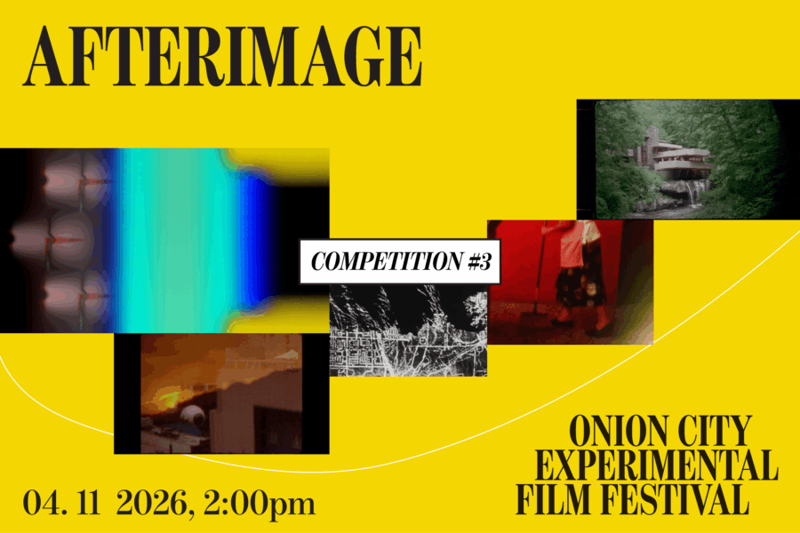

Onion City: Afterimage
This program is a collage of diaries and fragments. The films drift and return like an afterthought, like reflections or memories that lingered. Fleeting, hazy, at times hypnotic, AFTERIMAGE moves like a flâneur, walking across space and time.
Lineup:
Guarita | Lua Borges | Brazil | 2025 | 3 min
Palimpsest One: Now U See Us | Michael Alexander Morris | US | 2025 | 4 min | Chicago Festival Premiere
Mist | Brittany Gravely | US | 2025 | 4 min |Chicago Festival Premiere
WRIGHTFILM | Ben Creech | US | 2024 | 90 sec | World Festival Premiere
My Grandma Still Cleans My Uncle’s Room (Mi Mamita Todavía Mantiene el Cuarto de Mi Tío) | Alex Guerra | Guatemala/US | 2026 | 6 min | Chicago Festival Premiere
Fjord Time | Jonathan Johnson and Carleen Maur | US | 2025 | 5 min | Chicago Festival Premiere (for once I dreamed of you) | Kate Solar | Canada | 2025 | 6 min |Chicago Festival Premiere